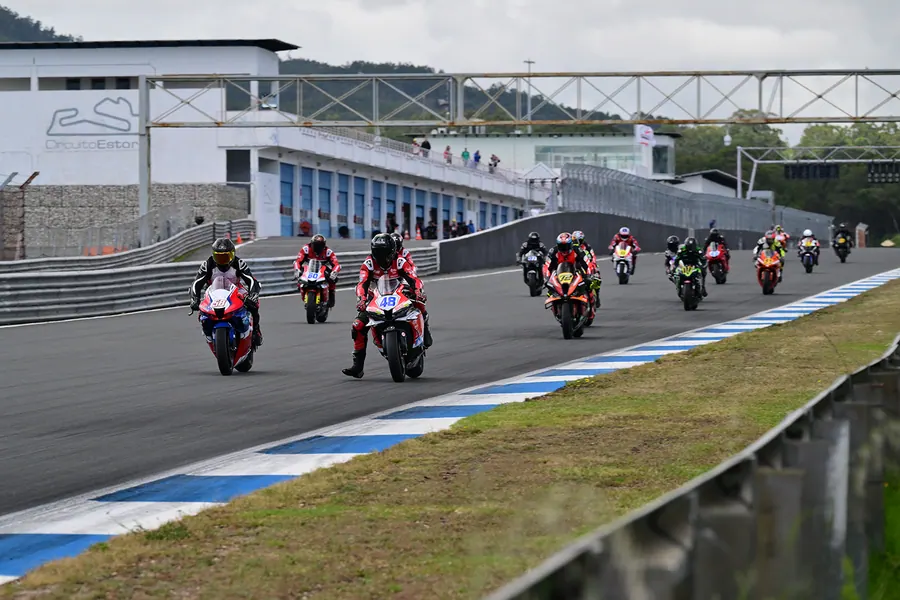
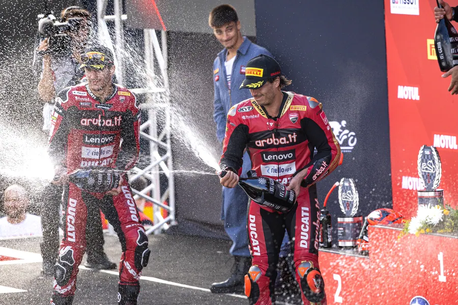
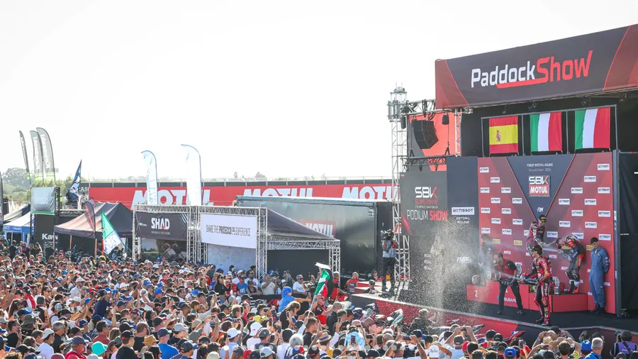
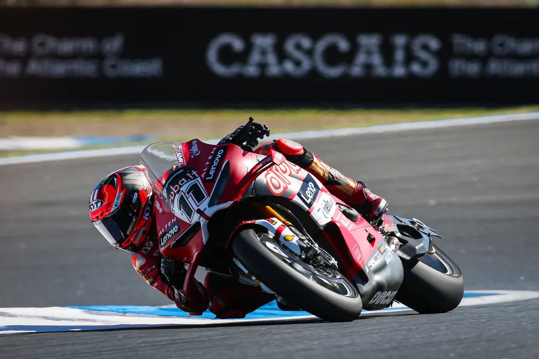

Chuva, Sol, Vento – um super fim-de-semana de arranque do CNV 2026
Chuva, Sol, Vento – um super fim-de-semana de arranque do CNV 2026
Completado que estava o dia de sábado, com um excelente lote de corridas muito disputadas e muita incerteza nos resultados, pilotos, equipas e público antecipavam um domingo muito competitivo ao qual se viria a juntar também a instabilidade meteorológica com o céu muito nublado e a forte nortada a fazerem-se sentir e a lançar ainda mais incerteza para o último dia deste primeiro fim-de-semana do CNV 2026. A destacar de ontem as vitórias de Marcos Ascencio (PREMOTO4), Simão Viegas (CNVJUNIOR), Luís Franco (Naked Bike 1) e Frédèric Bottoglieri (Naked Bike 2), Wislon Dilks (MOTO4), Vasco Camoesas (SSP300), Tiago João (Sportbike), Dany Soares (Copa Dunlop Motoval 1), Elliot Bland (Copa Dunlop Motoval 2), Luís Ferreira (SBK) e Martim Jesus 8SSP)

Foto: Luís Silva
CNV JUNIOR (Premoto4 e CNV Junior)
Marcos Ascensio assina dobradinha Premoto4
Carolina Azevedo 1ª num pódio 100% feminino nas CNVJunior
A recém-nomeada CNVJUNIOR foi ontem, sábado 16 de maio, uma das corridas mais emocionantes do dia com a decisão da vitória a ser levada por 4 pilotos para a linha de chegada. Não seria, pois, de admirar que as expectativas para domingo fossem efetivamente bastante elevadas no que à definição do pódio dizia respeito. Tal como ontem, seria esta categoria a abrir o segundo dia do calendário desportivo do fim-de-semana de estreia do CNV 2026, e apesar da vitória muito apertada ontem conseguida e tendo por base os resultados dos cronos realizados também na manhã de sábado, Marcos Ascensio alinharia uma vez mais no lugar intermédio da grelha de partida com Santiago Assolari a colocar a sua Beon uma vez mais na Pole. A acompanhar os dois e a fechar a primeira fila, Tiago Tomé. Uma vez mais o destaque para a presença de 4 pilotos femininas, Ana Martins (Pequeno Motos Racing), Carolina Azevedo, Lara Morais (ambas Fabio Racing team) e Margarida Venâncio.
Partida limpa para as 10 voltas ao Estoril do CNVJUNIOR. Tal como ontem, Ascensio (PM4) assegurou a a liderança na travagem para a curva 1 com Assolari (PM4) a “roer-lhe” os calcanhares a 0,08s de distância. Reardon (PM4), Watson (PM4) e Tiago Tomé (PM4) por seu lado agarravam-se à luta pelo 3º posto à geral. Entre os pilotos do CNVJUNIOR, Simão Viegas dava sequência ao dia de ontem e dominava bem instalado no 6º lugar à geral até à 4ª volta com Ana Martins, Lara Morais e Margarida Venâncio no seu encalço, momento em que um erro lhe custou a posição em pista atirando-o definitivamente para o 10º e último lugar.
Na frente Ascensio e Assolari mantinha a luta entre si e distanciavam-se 12s dos demais rivais deixando Watson, Readon e Tomé na luta entre eles pelo lugar mais baixo do pódio. Desta feita tudo indicava que a vitória seria discutida “a dois” e não “a quatro” como ontem. Com o desaire de Viegas, Carolina Azevedo assumia a 6ª posição à geral e a liderança entre os CNVJUNIOR com Ana Martins e Lara Morais a esgrimir entre si os restantes lugares da categoria.
Entrada para a reta final com Marcos Ascensio a lograr manter a liderança sobre Santiago Assolari com apenas 0,06s de vantagem depois de uma ultrapassagem no limite dos limites na parabólica Ayrton Senna. Tiago Tomé acabaria por se impor sobre Watson (4º à geral) e Reardon (5ª à geral) e agarrava o lugar mais baixo do pódio entre as PM4. Entre as CNVJUNIOR, Carolina Azevedo venceu sendo 7ª à geral, com Ana Martins (8ª à geral) e Lara Morais (9ª à geral) a fechar o primeiro pódio totalmente feminino da época.
TROFÉU NAKED BIKE
Ricardo Almeida o melhor nas NB1
Frédèric Bottoglieri “à campeão” com dobradinha nas NB2
Segunda corrida da época para os pilotos do Troféu Naked Bike com a chuva a “juntar-se à festa” breves momentos antes do arranque. Pole ocupada uma vez mais por Luís Franco (NB1). A seu lado Duarte Amaral (NB1) e Ricardo Almeida (NB1). Fredéric Bottoglieri, campeão em título nas NB2 e que ontem deu um verdadeiro recital de experiência e tenacidade ao impor a sua Triumph 765 no 2º lugar à geral voltaria a partir do 4º lugar da grelha hoje. Tendo ainda na memória a corrida de sábado, antecipava-se uma luta feroz na frente da corrida entre Luís Franco, Duarte Amaral e Ricardo Almeida (todos NB1) com Bottoglieri (NB2) a tentar impor uma vez mais a sua presença e desta feita com uma nova variável para gerir… a chuva.
Duarte Amaral (NB1) a impor a sua lei com um excelente arranque tomando a dianteira e levando na sua roda Almeida (NB1) e Franco (Nb1). Bottoglieri (NB2) mantinha posição, era 4º. Entre as NB2, ainda Augusto Machado assumia a 9ª posição à geral e Vilardebo era 11º.
Ritmo mais lento imposto pela humidade em pista após a breve chuva que se sentiu antes da partida, mas que permitia aos quatro primeiros (Amaral, Almeida, Franco e Bottoglieri) rodarem todos dentro de 1s de diferença. Tal como ontem, Bottoglieri apesar de demonstrar alguma dificuldade nas primeiras voltas em incomodar os demais dada a diferença de potência, ascenderia com meia distância cumprida ao 2º posto à geral relegando Amaral e Franco para trás de si. Este seria o momento para uma bandeira vermelha que a chuva acabaria por ditar. Com 2/3 da prova cumpridos fechava assim a classificação. Ricardo Almeida (NB1) era 1º, Bottoglieri (NB2) era 2º à geral e o vencedor da sua categoria. Em 3º Duarte Amaral (NB1).
A fechar TOP3 das NB1, Rodrigo Amaral 5º à geral. Nas NB2, Augusto Machado com o 2º posto sendo 9º à geral e por fim, Anselmo Vilardebo no mais baixo do pódio da classe sendo 11º à geral.
CNV MOTO4 / CNV SSP300 / CNV SPORTBIKE
Alexandre Cabá assina 1ª vitória do ano nas MOTO4
Henrique Vicente mais forte nas SSP300
Tiago João dobradinha nas Sportbike
Terceira corrida do programa desportivo do dia, entregue aos pilotos do CNV MOTO4, SSP300 e SPORTBIKE cuja agregação num pelotão único permitiu ter 19 pilotos a alinhar para o arranque da época. Repetição da grelha de partida com Tiago João (SPB) na Pole. A seu lado Wilson Dilks e Tomás Canarias (MOTO4). Vasco Camoesas, o campeão em título nas SSP300 e que ontem venceu na sua categoria, alinharia uma vez mais na 7º posição da grelha.
Uma menção para o projeto universitário muito especial da Universidade Politécnica da Catalunha que fez alinhar nas MOTO4 um chassi protótipo com motor stock KTM250 pilotado pelo jovem Abel Ramirez e que tão boa conta deu de si ao fechar o dia de ontem em 4º na sua categoria sendo 9º à geral.
Mais um arranque irrepreensível, desta feita com o piso já seco, de Tiago João (SPB) que na curva 2 da primeira volta já levava mais de 1s de avanço. No seu encalço Wilson Dilks (MOTO4) e Alexandra Cabá (MOTO4). Colado a ambos, Vasco Camoesas o mais forte entre as SSP300 com magra vantagem sobre Henrique Vicente.
Na entrada para a 3º volta, Tiago João já controlava o andamento com mais de 5s sobre todo o pelotão. A luta, uma vez mais estava centrada na disputa dos restantes lugares do pódio à geral. Cabá e Dilks eram os protagonistas. Gonçalo Melo Santos seguia o dueto à distância. Entre as SPB, Carlota Carochinho e Madalena Simões enfrentavam-se no 12º e 13º lugares respetivamente.
Com meia distância já percorrida, Tiago João (SPB) limitava-se a acumular voltas e a aumentar distância. Eram já 15s de vantagem. Na mesma classe Madalena Simões subia na classificação geral e era agora 8ª à geral. Luta intensa entre Cabá, Dilks, Gonçalo Melo Santos e Tomás Canarias a formar um minipelotão de MOTO4 na luta pela classificação geral. Este quarteto viria a perder Wilson Dilks que com problemas mecânicos parava em pista. A par, Vasco Camoesas e Henrique Vicente trocavam galhardetes pela liderança nas SSP300.
Na bandeira de xadrez, a confirmação da dobradinha para Tiago João com vitória folgada à geral e a ser o mais forte nas Sportbikes. No lugar intermédio e mais baixo do pódio à geral, e a acompanhar Tiago João, dois pilotos MOTO4, Alexandre Cabá (1ª nas MOTO4) e Tomás Canarias (2º nas MOTO4) que viria a suplantar Gonçalo Melo Santos (3º nas MOTO4) por escassos 0,14s. Nas SSP300, Henrique Vicente surpreendia o campeão em título Vasco Camoesas vencendo a classe com o seu 5º posto à geral. Camoesas era 2º na classe e 6º à geral na companhia de Rodrigo Ascensio, 3º na classe e 7º à geral. Ainda nas SPB, e com a vitória de Tiago João, a jovem piloto Madalena Simões subia ao pódio sendo 8ª à geral e Carlota Carochinho assinava o mais baixo do pódio sendo 11ª à geral. Abel Ramirez com o protótipo MOTO4 da Universidade Politécnica da Catalunha lograria o 12º posto à geral sendo uma vez mais, o 4ª classificado na classe.
CNV SBK / CNV SSP / CDM
Raul Felgueiras estreia-se nas vitórias nas CDM2
Elliot Brand repete resultado e soma mais uma vitória nas CDM1
Luís Ferreira o mais forte nas Superbikes
Martim Jesus assina mais uma vitória
Foram 20 os pilotos a alinhar no pelotão agregado e composto pelas CNVSBK (2 pilotos), CNV SSP (7 pilotos) e Copa Dunlop Motoval (11 pilotos divididos pelas categorias CDM1 e CDM2). Última corrida deste primeiro CNV da temporada de 2026, com luz verde para as SBK, SSP e Copa Dunlop Motoval. Luís Ferreira (SBK) assumia a Pole com Martim Jesus (SSP) e Diego Prieto (SSP) a seu lado. Entre os pilotos das CDM1, Carlos Couto ocupava a 13ª posição na grelha sendo o mais forte na classe, e Dany Soares nas CDM2 ocupava a 4ª posição.
Excelentes arranques de Martim Jesus (SSP), Luís Ferreira (SBK) e Ricardo Lopes (SBK) que assumiam assim os três primeiros lugares da geral. Rui Palma agarrava a liderança da CDM2 na 6ª posição à geral e Elliot Bland no 8º posto reinava entre as CDM1. Com 3 voltas completas o campeão em título nas SSP, Martim Jesus destacava-se colocando 2s de vantagem sobre o pelotão. Na sua classe não tinha nessa fase rivais já que Celestin Masy (SSP) e Isaac Rosa rodavam nas 4ª e 5ª posições respetivamente. No 2ª e 3ª lugar à geral, duas SBK, as de Lopes e Ferreira separados já por 3s entre si. Raúl Felgueiras por seu lado assumia a liderança nas CDM2 e Elliot Bland mantinha posição semelhante nas CDM1.
Cumpridas 10 das 14 voltas, Martim Jesus mantinha estável a sua liderança com 8s de vantagem sobre o pelotão sendo assim líder incontestado à geral e nas SSP. Ricardo Lopes mantinha a 2ª posição à geral com a sua SBK, mas ainda havia indefinição para o lugar mais baixo do pódio. A luta pela posição estava centrada entre Luís Ferreira (SBK) e Diego Prieto (SSP).
Na linha de meta, Martim Jesus assinava também ele a dobradinha e dava o melhor começo à defesa do seu título de campeão nacional. Ricardo Lopes (SBK) seria 2º. A luta entre Luís Ferreira e Diego Prieto sorriria ao piloto da SBK. Ferreira vencia depois de conseguir “abrir” quase 3s de distância para o seu oponente das SSP antes de este abandonar por problemas mecânicos na última volta.
Por categorias e no que aos TOP3 diz respeito, nas SSP, Martim Jesus (1º à geral), Isaac Rosa (4º à geral) e Celestin Masy (3º à geral). Nas SBK, Ricardo Lopes (2º à geral) e Luís Ferreira (3º à geral). Na Copa Dunlop Motoval, nas CDM1, Elliot Bland (9º à geral), Tiago Pires (13º à geral) e Carlos Couto (14º à geral), nas CDM2, Raúl Felgueiras (6º à geral), Pedro Batista (10º à geral) e Rui Palma (11º à geral).
Circuito Estoril
Mais notícias
Voltar às notícias →
MAIS HISTÓRIA A SER ESCRITA: Bulega supera recorde de pontos de longa data de Rea com vitória na Corrida 2 no Estoril MAIS HISTÓRIA SENDO ESCRITA: Bulega supera recorde de pontos de longa data de Rea com vitória na Corrida 2 no Estoril TEXTO: WorldSBK /…
DE VOLTA AO TOPO: Bulega regressa ao lugar mais alto do pódio à frente de Lecuona; Surra conquista pódio no Estoril DE VOLTA AO TOPO: Bulega regressa ao lugar mais alto do pódio à frente de Lecuona; Surra conquista pódio no Estoril FONTE & FOTO: WorldSBK…
WORLDSBK – SEXTA-FEIRA: Bulega supera Surra e Lecuona, mas por pouco por pouco; Oliveira impressiona com 4º lugar em casa. WORLDSBK – SEXTA-FEIRA: Bulega supera Surra e Lecuona, mas por pouco por pouco; Oliveira impressiona com 4º lugar em casa. FONTE e FOTO:…